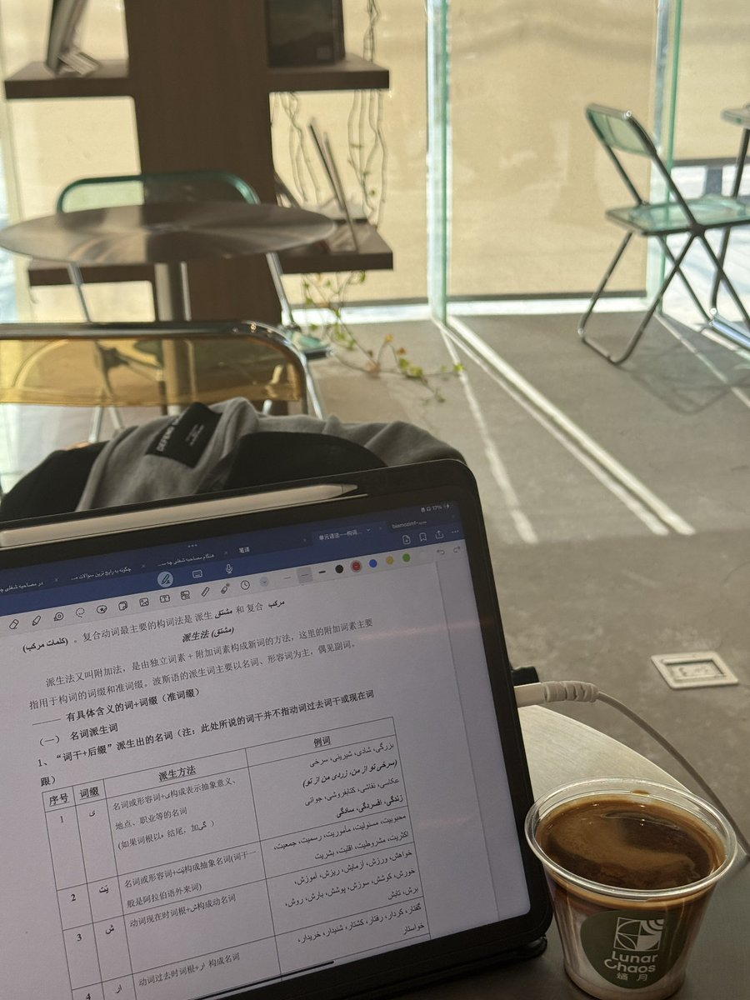

penpunk
@penpunx
@ChibanaK1 这学得是 阿拉伯语？

カツキ
@ChibanaK1
teenager时期的我应该会很喜欢我现在的状态
或许以后也会是
生活充斥着音乐 语言和视觉艺术
但是我今天真切地感受到 我整个人要过载了
他们给我带来的压力越来越大 就要压垮我
今天改音乐节策划案 明天练中波口译和专四考试 后天是设计课大作业portfolio的deadline
这dirty也不好喝 https://t.co/lfzxiPGcnN